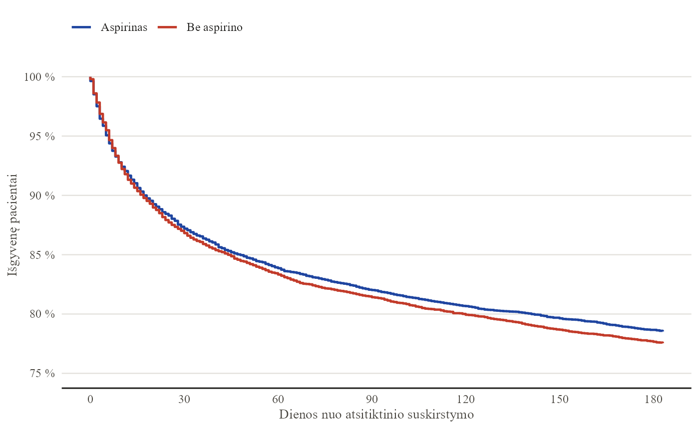
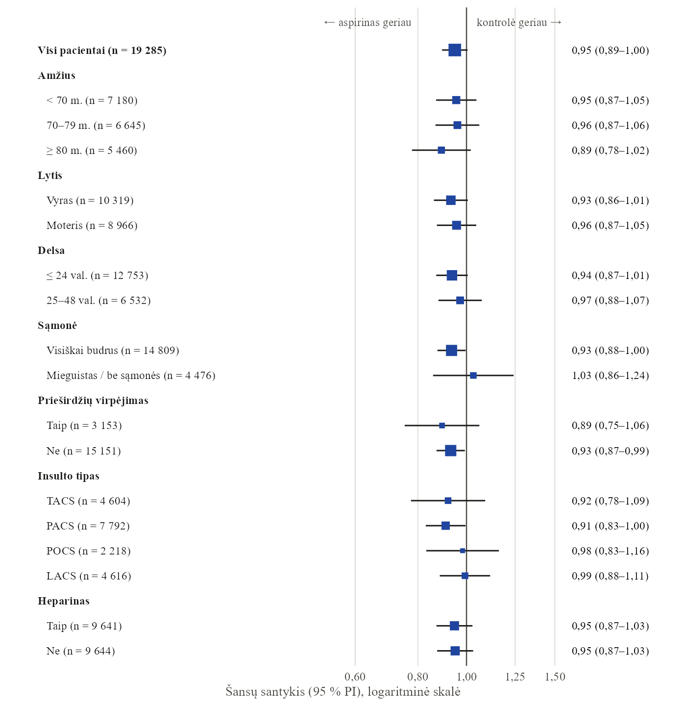

Kaip atlikti išgyvenamumo analizę?
Kaplan-Meier kreivės, log-rank testas ir Cox regresija su R: kaip analizuoti laiką iki įvykio, kai dalis stebėjimų dar nesibaigė, ir kaip teisingai pateikti rezultatus.
2026-10-25
Padedu įmonėms ir tyrėjams priimti sprendimus, kuriais galima pasitikėti: nuo vienos konsultacijos iki reguliarių ataskaitų ir duomenų sistemų.
Pirmas 30 min. pokalbis nemokamas
Paulius Alaburda, statistikas nuo 2015 m. Daugiau nei 200 projektų verslui ir tyrėjams, keturios recenzuotos publikacijos, šiandien vadovauju 18 žmonių duomenų komandai.
Pradėkite nuo mažo žingsnio. Dažnas ilgalaikis bendradarbiavimas prasideda nuo vienos konsultacijos.
Žinote, ką norite daryti, bet reikia antros nuomonės.
Reikia konkretaus rezultato per sutartą laiką ir už sutartą kainą.
Duomenys turi dirbti kiekvieną mėnesį, ne tik vieną kartą.
Tikslią kainą ir terminą sutariame prieš pradedant darbą.
Klientų darbai konfidencialūs, todėl pavyzdžiui paėmiau viešus Tarptautinio insulto tyrimo duomenis: 19 435 pacientai ir aštuonių puslapių ataskaita nuo neapdorotų duomenų iki išvadų.


Rašote baigiamąjį darbą ar planuojate tyrimą? Abu įrankiai veikia naršyklėje, lietuviškai ir be registracijos.
Įkelkite CSV ar Excel failą ir gaukite rezultatus, grafikus ir aprašymą Word formatu: nuo t testo ir ANOVA iki logistinės regresijos. Duomenys lieka jūsų naršyklėje.
Išbandyti analizę →Kiek žmonių apklausti, kiek tiriamųjų reikia kiekvienai grupei ar kiek dienų laukti A/B testo. Su tekstu metodikos skyriui ir R kodu.
Apskaičiuoti imtį →Įrankis atliks skaičiavimus, bet nepasakys, ar metodas tinka jūsų tyrimui ir kaip rezultatus apginti. Tam yra konsultacija ir straipsniai.
Praktiniai gidai, kaip pasirinkti metodą, apskaičiuoti imtį ir teisingai interpretuoti rezultatus.
Parašykite kelis sakinius apie savo situaciją. Atsakysiu, kaip galiu padėti, ir pasiūlysiu pirmą žingsnį.